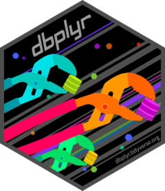

dbplyr 패키지는 DBMS를 위한 dplyr 패키지의 Backend다. dplyr 패키지의 R 환경에서 data.frame 객체에서 상속된 데이터 객체를 조작해서 데이터 분석을 수행하는 패키지라면, dbplyr 패키지는 dplyr 패키지의 문법으로 DBMS 환경의 Tables 자원을 액세스하여 데이터 분석을 수행하게 도와 준다.
dbplyr 패키지는 DBMS를 위한 dplyr 패키지의 Backend다. dplyr 패키지의 R 환경에서 data.frame 객체에서 상속된 데이터 객체를 조작해서 데이터 분석을 수행하는 패키지라면, dbplyr 패키지는 dplyr 패키지의 문법으로 DBMS 환경의 Tables 자원을 액세스하여 데이터 분석을 수행하게 도와 준다.

Mac OS X 노트북 환경에 PostgrSQL DBMS 12 버전을= 설치한 환경에 https://github.com/lcheng6/nyc-taxi-data-code-annotated의 정보를 이용해서New York 지역의 Taxi 운행 공공 데이터를 분석한 사례의 일부 데이터를 migration하였다.
PostgreSQL DBMS의 정보는 다음과 같다.
library(RPostgreSQL)
con <- dbConnect(dbDriver("PostgreSQL"), dbname = "nyc-taxi-data", host = "localhost")
# DBMS 정보
dbGetInfo(con)
$host
[1] "localhost"
$port
[1] "5432"
$user
[1] "choonghyunryu"
$dbname
[1] "nyc-taxi-data"
$serverVersion
[1] "12.0.5"
$protocolVersion
[1] 3
$backendPId
[1] 72687
$rsId
list()예제로 사용할 trips 테이블은 New York City에서의 택시 운행 정보를 담은 테이블이다.
trips 테이블이 폴함하고 있는 컬럼 이름은 다음과 같다. 30개의 데이터 컬럼을 가지고 있다.
# trips 테이블 컬럼 이름
dbListFields(con, "trips")
[1] "id" "cab_type_id"
[3] "vendor_id" "pickup_datetime"
[5] "dropoff_datetime" "store_and_fwd_flag"
[7] "rate_code_id" "pickup_longitude"
[9] "pickup_latitude" "dropoff_longitude"
[11] "dropoff_latitude" "passenger_count"
[13] "trip_distance" "fare_amount"
[15] "extra" "mta_tax"
[17] "tip_amount" "tolls_amount"
[19] "ehail_fee" "improvement_surcharge"
[21] "congestion_surcharge" "total_amount"
[23] "payment_type" "trip_type"
[25] "pickup_nyct2010_gid" "dropoff_nyct2010_gid"
[27] "pickup_location_id" "dropoff_location_id"
[29] "pickup" "dropoff" 컬럼 이름으로는 정보가 부족하다. 그래서 PostgreSQL DBMS의 메타 정보를 읽어서 데이터 타입과 컬럼의 description을 조회해 보았다. 간단하게 get_schema라는 이름의 사용자 정의 함수를 만들어서 조회해 본다.
# Table 정보 가져오는 함수
get_schema <- function(con, tab) {
sql <- sprintf("select column_name
,data_type
,col_description('public.%s'::regclass, ordinal_position)
from information_schema.columns
where table_schema = 'public'
and table_name = '%s'", tab, tab)
dbGetQuery(con, sql)
}
# trips 테이블 컬럼 정보
get_schema(con, "trips")
column_name data_type col_description
1 id integer <NA>
2 cab_type_id integer <NA>
3 vendor_id text <NA>
4 pickup_datetime timestamp without time zone <NA>
5 dropoff_datetime timestamp without time zone <NA>
6 store_and_fwd_flag text <NA>
7 rate_code_id integer <NA>
8 pickup_longitude numeric <NA>
9 pickup_latitude numeric <NA>
10 dropoff_longitude numeric <NA>
11 dropoff_latitude numeric <NA>
12 passenger_count integer <NA>
13 trip_distance numeric <NA>
14 fare_amount numeric <NA>
15 extra numeric <NA>
16 mta_tax numeric <NA>
17 tip_amount numeric <NA>
18 tolls_amount numeric <NA>
19 ehail_fee numeric <NA>
20 improvement_surcharge numeric <NA>
21 congestion_surcharge numeric <NA>
22 total_amount numeric <NA>
23 payment_type text <NA>
24 trip_type integer <NA>
25 pickup_nyct2010_gid integer <NA>
26 dropoff_nyct2010_gid integer <NA>
27 pickup_location_id integer <NA>
28 dropoff_location_id integer <NA>
29 pickup USER-DEFINED <NA>
30 dropoff USER-DEFINED <NA>다른 방법으로는 dbColumnInfo() 함수를 이용하는 방법이다. 이 함수는 RPostgreSQL 패키지에서 제공하는 함수다.
rs <- dbSendQuery(con, "SELECT * FROM trips limit 10")
dbColumnInfo(rs)
name Sclass type len precision scale
1 id integer INTEGER 4 -1 -1
2 cab_type_id integer INTEGER 4 -1 -1
3 vendor_id character TEXT -1 -1 -1
4 pickup_datetime POSIXct TIMESTAMP 8 -1 -1
5 dropoff_datetime POSIXct TIMESTAMP 8 -1 -1
6 store_and_fwd_flag character TEXT -1 -1 -1
7 rate_code_id integer INTEGER 4 -1 -1
8 pickup_longitude double DECIMAL -1 -1 -1
9 pickup_latitude double DECIMAL -1 -1 -1
10 dropoff_longitude double DECIMAL -1 -1 -1
11 dropoff_latitude double DECIMAL -1 -1 -1
12 passenger_count integer INTEGER 4 -1 -1
13 trip_distance double DECIMAL -1 -1 -1
14 fare_amount double DECIMAL -1 -1 -1
15 extra double DECIMAL -1 -1 -1
16 mta_tax double DECIMAL -1 -1 -1
17 tip_amount double DECIMAL -1 -1 -1
18 tolls_amount double DECIMAL -1 -1 -1
19 ehail_fee double DECIMAL -1 -1 -1
20 improvement_surcharge double DECIMAL -1 -1 -1
21 congestion_surcharge double DECIMAL -1 -1 -1
22 total_amount double DECIMAL -1 -1 -1
23 payment_type character TEXT -1 -1 -1
24 trip_type integer INTEGER 4 -1 -1
25 pickup_nyct2010_gid integer INTEGER 4 -1 -1
26 dropoff_nyct2010_gid integer INTEGER 4 -1 -1
27 pickup_location_id integer INTEGER 4 -1 -1
28 dropoff_location_id integer INTEGER 4 -1 -1
29 pickup character UNKNOWN -1 1107460 -1
30 dropoff character UNKNOWN -1 1107460 -1
nullOK
1 FALSE
2 TRUE
3 TRUE
4 TRUE
5 TRUE
6 TRUE
7 TRUE
8 TRUE
9 TRUE
10 TRUE
11 TRUE
12 TRUE
13 TRUE
14 TRUE
15 TRUE
16 TRUE
17 TRUE
18 TRUE
19 TRUE
20 TRUE
21 TRUE
22 TRUE
23 TRUE
24 TRUE
25 TRUE
26 TRUE
27 TRUE
28 TRUE
29 TRUE
30 TRUEtrips 테이블의 데이터 건수는 84,345,018건이다. 데이터 건수를 화인하기 위해서 "SELECT count(*) FROM trips" 문을 수행하였으며, 집계를 위한 Query 수행 시간이 짧지는 았았다.
dbGetQuery(con, "SELECT count(*) FROM trips")
count
1 84345018데이터를 집계하는 간단한 예제로 dbplyr의 사용 방법을 살펴보자.
택시의 주행 거리당 운임의 평균을 계산한다. Query로 간단하게 집계할 수 있다.
sql <- "select avg(fare_amount / trip_distance) as fare_per_distance
from trips
where trip_distance > 0
and fare_amount > 0"
excute_time <- system.time(fare <- dbGetQuery(con, sql))
excute_time
user system elapsed
0.001 0.000 153.817 fare
fare_per_distance
1 5.623411시스템 환경에 따라 차이가 있을 수 있으나, 예제에서는 153.817초 동안 수행되었다. 그리고 킬로미터 당 약 5.6 달러의 평균 요금을 지불하였음을 알 수 있다.
요금 결제 방법에 따른 평균 총 지불 운임에 대한 통계는 다음과 같다. 그런데 지불 방법에 대한 코드 값이 대소문자가 섞여 있고, 동일한 내용이 몇 개의 코드로 표현되는 것이 있어 정확한 통계를 산출하지 못했다.
sql <- "SELECT payment_type
,AVG(total_amount) mean_fare
FROM trips t
GROUP BY payment_type
ORDER BY mean_fare DESC"
dbGetQuery(con, sql)
payment_type mean_fare
1 Cre 14.3489055
2 CRE 14.1596819
3 CRD 13.6265705
4 NA 12.5874196
5 Dis 12.2977820
6 No 10.8333954
7 CAS 10.1805913
8 Cas 9.9806661
9 CSH 0.6285917그래서 지불 방법의 코드를 대문자로 변환하고 동일한 의미로 분류하여 집계하였다.
sql <- "SELECT CASE WHEN UPPER(payment_type) IN ('CRE', 'CRD') THEN 'Credit Card'
WHEN UPPER(payment_type) IN ('CAS', 'CSH') THEN 'Cash'
WHEN UPPER(payment_type) = 'DIS' THEN 'Dispute'
WHEN UPPER(payment_type) = 'NO' THEN 'No charge'
ELSE 'Unknown' END AS payment_type
,COUNT(*) as freq
,AVG(total_amount) mean_fare
FROM trips t
GROUP BY CASE WHEN UPPER(payment_type) IN ('CRE', 'CRD') THEN 'Credit Card'
WHEN UPPER(payment_type) IN ('CAS', 'CSH') THEN 'Cash'
WHEN UPPER(payment_type) = 'DIS' THEN 'Dispute'
WHEN UPPER(payment_type) = 'NO' THEN 'No charge'
ELSE 'Unknown' END
ORDER BY mean_fare DESC"
dbGetQuery(con, sql)
payment_type freq mean_fare
1 Credit Card 29294014 14.232335
2 Dispute 36768 12.297782
3 Unknown 208765 11.169581
4 Cash 54805471 8.851864dbplyr를 이용한 데이터 집계의 장점은 R 환경에서 일관된 dplyr 문법으로 데이터를 집계할 수 있다는 점이다. 특히 SQL query에 익숙치 않은 분석가도 익숙한 dplyr 문법으로 데이터 분석을 수행할 수 있다.
먼저 tbl() 함수로 해당 테이블에 접근할 수 있는 tbl 컨넥션을 생성한다.
[1] "tbl_PostgreSQLConnection"trips_db
# Source: table<trips> [?? x 30]
# Database: postgres 12.0.5 [@localhost:5432/nyc-taxi-data]
id cab_type_id vendor_id pickup_datetime dropoff_datetime
<int> <int> <chr> <dttm> <dttm>
1 1 1 VTS 2010-01-19 04:22:00 2010-01-19 04:29:00
2 2 1 CMT 2010-01-27 00:42:46 2010-01-27 01:00:20
3 3 1 VTS 2010-01-30 19:00:00 2010-01-30 19:32:00
4 4 1 CMT 2010-01-18 11:16:32 2010-01-18 11:27:57
5 5 1 CMT 2010-01-30 19:18:50 2010-01-30 19:23:31
6 6 1 CMT 2010-01-01 14:37:46 2010-01-01 14:43:19
7 7 1 VTS 2010-01-17 12:13:00 2010-01-17 12:30:00
8 8 1 VTS 2010-01-23 22:20:00 2010-01-23 22:24:00
9 9 1 VTS 2010-01-26 09:14:00 2010-01-26 09:29:00
10 10 1 VTS 2010-01-31 04:12:00 2010-01-31 04:18:00
# … with more rows, and 25 more variables: store_and_fwd_flag <chr>,
# rate_code_id <int>, pickup_longitude <dbl>,
# pickup_latitude <dbl>, dropoff_longitude <dbl>,
# dropoff_latitude <dbl>, passenger_count <int>,
# trip_distance <dbl>, fare_amount <dbl>, extra <dbl>,
# mta_tax <dbl>, tip_amount <dbl>, tolls_amount <dbl>,
# ehail_fee <dbl>, improvement_surcharge <dbl>,
# congestion_surcharge <dbl>, total_amount <dbl>,
# payment_type <chr>, trip_type <int>, pickup_nyct2010_gid <int>,
# dropoff_nyct2010_gid <int>, pickup_location_id <int>,
# dropoff_location_id <int>, pickup <chr>, dropoff <chr>trips_db 객체를 콘솔에 출력한 결과의 포맷은 dplyr을 사용한 결과와 유사하다. 그러나 데이터의 건수를 위미하는 영역은 정확한 건수를 표시하지 않고, 물음표로 표현된다.
앞서 구한 택시의 주행 거리당 운임의 평균은 dplyr의 방법처럼 쉽게 구할 수 있다. 단지, 차이점은 데이터 객체 대신에 tbl 컨넥션을 데이터 소스로 지정한다는 점이다.
그런데 153.817초 동안 수행된 Query와는 달리 바로 수행이 종료된다.
system.time(fare_db <- trips_db %>%
select(fare_amount, trip_distance) %>%
filter(fare_amount > 0) %>%
filter(trip_distance > 0) %>%
summarise(fare_per_distance = mean(fare_amount / trip_distance)))
user system elapsed
0.019 0.002 0.023 is(fare_db)
[1] "tbl_PostgreSQLConnection"fare_db %>% show_query()
<SQL>
SELECT AVG("fare_amount" / "trip_distance") AS "fare_per_distance"
FROM (SELECT *
FROM (SELECT "fare_amount", "trip_distance"
FROM "trips") "q01"
WHERE ("fare_amount" > 0.0)) "q02"
WHERE ("trip_distance" > 0.0)그 이유는 생성된 객체가 결과가 아니라 아직도 tbl 컨넥션임을 알 수 있다. 그리고 show_query() 함수로 기술된 dplyr 문법의 표현식이 연결된 DBMS에서 수행될 Query를 조회할 수도 있다.
is(fare_db)
[1] "tbl_PostgreSQLConnection"fare_db %>% show_query()
<SQL>
SELECT AVG("fare_amount" / "trip_distance") AS "fare_per_distance"
FROM (SELECT *
FROM (SELECT "fare_amount", "trip_distance"
FROM "trips") "q01"
WHERE ("fare_amount" > 0.0)) "q02"
WHERE ("trip_distance" > 0.0)collect() 함수가 실제로 연결된 DBMS에서 Query를 실행한 후 결과를 R 영역으로 가져온다.
system.time(fare2 <- fare_db %>% collect())
user system elapsed
0.042 0.000 116.439 fare2
# A tibble: 1 x 1
fare_per_distance
<dbl>
1 5.62요금 결제 방법에 따른 평균 총 지불 운임에 대한 통계는 다음과 같이 구한다.
payment_db <- trips_db %>%
select(payment_type, total_amount) %>%
mutate(payment_type = toupper(payment_type)) %>%
mutate(payment_type = ifelse(payment_type %in% c('CRE', 'CRD'),
'Credit Card', payment_type)) %>%
mutate(payment_type = ifelse(payment_type %in% c('CAS', 'CSH'),
'Cash', payment_type)) %>%
mutate(payment_type = ifelse(payment_type %in% c('DIS'),
'Dispute', payment_type)) %>%
mutate(payment_type = ifelse(payment_type %in% c('NO'),
'No charge', 'Unknown')) %>%
group_by(payment_type) %>%
summarise(freq = n(),
mean_fare = mean(total_amount)) %>%
arrange(desc(mean_fare))
payment_db %>% show_query()
<SQL>
SELECT "payment_type", COUNT(*) AS "freq", AVG("total_amount") AS "mean_fare"
FROM (SELECT CASE WHEN ("payment_type" IN ('NO')) THEN ('No charge') WHEN NOT("payment_type" IN ('NO')) THEN ('Unknown') END AS "payment_type", "total_amount"
FROM (SELECT CASE WHEN ("payment_type" IN ('DIS')) THEN ('Dispute') WHEN NOT("payment_type" IN ('DIS')) THEN ("payment_type") END AS "payment_type", "total_amount"
FROM (SELECT CASE WHEN ("payment_type" IN ('CAS', 'CSH')) THEN ('Cash') WHEN NOT("payment_type" IN ('CAS', 'CSH')) THEN ("payment_type") END AS "payment_type", "total_amount"
FROM (SELECT CASE WHEN ("payment_type" IN ('CRE', 'CRD')) THEN ('Credit Card') WHEN NOT("payment_type" IN ('CRE', 'CRD')) THEN ("payment_type") END AS "payment_type", "total_amount"
FROM (SELECT UPPER("payment_type") AS "payment_type", "total_amount"
FROM "trips") "q01") "q02") "q03") "q04") "q05"
GROUP BY "payment_type"
ORDER BY "mean_fare" DESCpayment_db %>% collect()
# A tibble: 1 x 3
payment_type freq mean_fare
<chr> <dbl> <dbl>
1 Unknown 84345018 10.7그런데, 결과를 보면 원하는 답이 아니고, 수행 속도도 매우 느리다. 그래서 mutate() 함수를 여러 개 독립, 순차적으로 기술한 것을 하나의 함수로 합쳐서 수행해 보았다.
수행속도도 개선되었고 원하는 결과를 얻을 수 있었다.
payment2_db <- trips_db %>%
select(payment_type, total_amount) %>%
mutate(payment_type = toupper(payment_type)) %>%
mutate(payment_type = ifelse(payment_type %in% c('CRE', 'CRD'),
'Credit Card', ifelse(payment_type %in% c('CAS', 'CSH'),
'Cash', ifelse(payment_type %in% c('DIS'),
'Dispute', ifelse(payment_type %in% c('NO'),
'No charge', 'Unknown'))))) %>%
group_by(payment_type) %>%
summarise(freq = n(),
mean_fare = mean(total_amount)) %>%
arrange(desc(mean_fare))
payment2_db %>% show_query()
<SQL>
SELECT "payment_type", COUNT(*) AS "freq", AVG("total_amount") AS "mean_fare"
FROM (SELECT CASE WHEN ("payment_type" IN ('CRE', 'CRD')) THEN ('Credit Card') WHEN NOT("payment_type" IN ('CRE', 'CRD')) THEN (CASE WHEN ("payment_type" IN ('CAS', 'CSH')) THEN ('Cash') WHEN NOT("payment_type" IN ('CAS', 'CSH')) THEN (CASE WHEN ("payment_type" IN ('DIS')) THEN ('Dispute') WHEN NOT("payment_type" IN ('DIS')) THEN (CASE WHEN ("payment_type" IN ('NO')) THEN ('No charge') WHEN NOT("payment_type" IN ('NO')) THEN ('Unknown') END) END) END) END AS "payment_type", "total_amount"
FROM (SELECT UPPER("payment_type") AS "payment_type", "total_amount"
FROM "trips") "q01") "q02"
GROUP BY "payment_type"
ORDER BY "mean_fare" DESCpayment2_db %>% collect()
# A tibble: 4 x 3
payment_type freq mean_fare
<chr> <dbl> <dbl>
1 Credit Card 29294014 14.2
2 Dispute 36768 12.3
3 Unknown 208765 11.2
4 Cash 54805471 8.85아직 dbplyr가 복잡한 dplyr 구문을 Query로 파싱할 때에 성능의 이슈나, 올바로 파싱하지 못하는 문제점을 안고 있다. 특히, mutate() 함수를 여러 개 독립, 순차적으로 기술하는 것은 피해야 한다.
show_query() 함수로 DBMS에서 수행될 Query를 살펴 보는 것이 중요하다. 그런데 dbplyr는 Explain Plan도 지원하므로 수행 속도의 개선을 위한 튜닝에서 적절하게 활용하는 것도 좋다.
다음은 택시의 주행 거리당 운임의 평균을 계산한 dbplyr 구문의 Explain Plan이다.
cat(remote_query_plan(fare_db))
QUERY PLAN
1 Finalize Aggregate (cost=2795452.65..2795452.66 rows=1 width=32)
2 -> Gather (cost=2795452.43..2795452.64 rows=2 width=32)
3 Workers Planned: 2
4 -> Partial Aggregate (cost=2794452.43..2794452.44 rows=1 width=32)
5 -> Parallel Seq Scan on trips (cost=0.00..2619740.10 rows=34942465 width=21)
6 Filter: ((fare_amount > 0.0) AND (trip_distance > 0.0))다음은 택시의 주행 거리당 운임의 평균을 계산한 Query의 Explain Plan이다. dbplyr 구문의 것도 거의 유사하다.
sql2 <- "EXPLAIN ANALYZE
SELECT payment_type
,AVG(total_amount) mean_fare
FROM trips t
GROUP BY payment_type
ORDER BY mean_fare DESC"
plan <- dbGetQuery(con, sql2)
plan
QUERY PLAN
1 Sort (cost=2620742.87..2620742.89 rows=9 width=36) (actual time=79915.407..79917.957 rows=9 loops=1)
2 Sort Key: (avg(total_amount)) DESC
3 Sort Method: quicksort Memory: 25kB
4 -> Finalize GroupAggregate (cost=2620740.38..2620742.73 rows=9 width=36) (actual time=79915.133..79917.932 rows=9 loops=1)
5 Group Key: payment_type
6 -> Gather Merge (cost=2620740.38..2620742.48 rows=18 width=36) (actual time=79915.071..79917.752 rows=27 loops=1)
7 Workers Planned: 2
8 Workers Launched: 2
9 -> Sort (cost=2619740.36..2619740.38 rows=9 width=36) (actual time=79891.627..79891.631 rows=9 loops=3)
10 Sort Key: payment_type
11 Sort Method: quicksort Memory: 26kB
12 Worker 0: Sort Method: quicksort Memory: 26kB
13 Worker 1: Sort Method: quicksort Memory: 26kB
14 -> Partial HashAggregate (cost=2619740.10..2619740.21 rows=9 width=36) (actual time=79891.487..79891.508 rows=9 loops=3)
15 Group Key: payment_type
16 -> Parallel Seq Scan on trips t (cost=0.00..2443989.07 rows=35150207 width=14) (actual time=0.094..46938.267 rows=28115006 loops=3)
17 Planning Time: 0.160 ms
18 Execution Time: 79918.048 ms요금 결제 방법에 따른 평균 총 지불 운임에 대한 통계를 계산하기 위한 dbplyr 구문의 Explain Plan이다.
cat(remote_query_plan(payment_db))
QUERY PLAN
1 Sort (cost=12199179.18..12199179.21 rows=9 width=72)
2 Sort Key: (avg(trips.total_amount)) DESC
3 -> Finalize GroupAggregate (cost=12199174.22..12199179.04 rows=9 width=72)
4 Group Key: (CASE WHEN (CASE WHEN (CASE WHEN (CASE WHEN (upper(trips.payment_type) = ANY ('{CRE,CRD}'::text[])) THEN 'Credit Card'::text WHEN (upper(trips.payment_type) <> ALL ('{CRE,CRD}'::text[])) THEN upper(trips.payment_type) ELSE NULL::text END = ANY ('{CAS,CSH}'::text[])) THEN 'Cash'::text WHEN (CASE WHEN (upper(trips.payment_type) = ANY ('{CRE,CRD}'::text[])) THEN 'Credit Card'::text WHEN (upper(trips.payment_type) <> ALL ('{CRE,CRD}'::text[])) THEN upper(trips.payment_type) ELSE NULL::text END <> ALL ('{CAS,CSH}'::text[])) THEN CASE WHEN (upper(trips.payment_type) = ANY ('{CRE,CRD}'::text[])) THEN 'Credit Card'::text WHEN (upper(trips.payment_type) <> ALL ('{CRE,CRD}'::text[])) THEN upper(trips.payment_type) ELSE NULL::text END ELSE NULL::text END = 'DIS'::text) THEN 'Dispute'::text WHEN (CASE WHEN (CASE WHEN (upper(trips.payment_type) = ANY ('{CRE,CRD}'::text[])) THEN 'Credit Card'::text WHEN (upper(trips.payment_type) <> ALL ('{CRE,CRD}'::text[])) THEN upper(trips.payment_type) ELSE NULL::text END = ANY ('{CAS,CSH}'::text[])) THEN 'Cash'::text WHEN (CASE WHEN (upper(trips.payment_type) = ANY ('{CRE,CRD}'::text[])) THEN 'Credit Card'::text WHEN (upper(trips.payment_type) <> ALL ('{CRE,CRD}'::text[])) THEN upper(trips.payment_type) ELSE NULL::text END <> ALL ('{CAS,CSH}'::text[])) THEN CASE WHEN (upper(trips.payment_type) = ANY ('{CRE,CRD}'::text[])) THEN 'Credit Card'::text WHEN (upper(trips.payment_type) <> ALL ('{CRE,CRD}'::text[])) THEN upper(trips.payment_type) ELSE NULL::text END ELSE NULL::text END <> 'DIS'::text) THEN CASE WHEN (CASE WHEN (upper(trips.payment_type) = ANY ('{CRE,CRD}'::text[])) THEN 'Credit Card'::text WHEN (upper(trips.payment_type) <> ALL ('{CRE,CRD}'::text[])) THEN upper(trips.payment_type) ELSE NULL::text END = ANY ('{CAS,CSH}'::text[])) THEN 'Cash'::text WHEN (CASE WHEN (upper(trips.payment_type) = ANY ('{CRE,CRD}'::text[])) THEN 'Credit Card'::text WHEN (upper(trips.payment_type) <> ALL ('{CRE,CRD}'::text[])) THEN upper(trips.payment_type) ELSE NULL::text END <> ALL ('{CAS,CSH}'::text[])) THEN CASE WHEN (upper(trips.payment_type) = ANY ('{CRE,CRD}'::text[])) THEN 'Credit Card'::text WHEN (upper(trips.payment_type) <> ALL ('{CRE,CRD}'::text[])) THEN upper(trips.payment_type) ELSE NULL::text END ELSE NULL::text END ELSE NULL::text END = 'NO'::text) THEN 'No charge'::text WHEN (CASE WHEN (CASE WHEN (CASE WHEN (upper(trips.payment_type) = ANY ('{CRE,CRD}'::text[])) THEN 'Credit Card'::text WHEN (upper(trips.payment_type) <> ALL ('{CRE,CRD}'::text[])) THEN upper(trips.payment_type) ELSE NULL::text END = ANY ('{CAS,CSH}'::text[])) THEN 'Cash'::text WHEN (CASE WHEN (upper(trips.payment_type) = ANY ('{CRE,CRD}'::text[])) THEN 'Credit Card'::text WHEN (upper(trips.payment_type) <> ALL ('{CRE,CRD}'::text[])) THEN upper(trips.payment_type) ELSE NULL::text END <> ALL ('{CAS,CSH}'::text[])) THEN CASE WHEN (upper(trips.payment_type) = ANY ('{CRE,CRD}'::text[])) THEN 'Credit Card'::text WHEN (upper(trips.payment_type) <> ALL ('{CRE,CRD}'::text[])) THEN upper(trips.payment_type) ELSE NULL::text END ELSE NULL::text END = 'DIS'::text) THEN 'Dispute'::text WHEN (CASE WHEN (CASE WHEN (upper(trips.payment_type) = ANY ('{CRE,CRD}'::text[])) THEN 'Credit Card'::text WHEN (upper(trips.payment_type) <> ALL ('{CRE,CRD}'::text[])) THEN upper(trips.payment_type) ELSE NULL::text END = ANY ('{CAS,CSH}'::text[])) THEN 'Cash'::text WHEN (CASE WHEN (upper(trips.payment_type) = ANY ('{CRE,CRD}'::text[])) THEN 'Credit Card'::text WHEN (upper(trips.payment_type) <> ALL ('{CRE,CRD}'::text[])) THEN upper(trips.payment_type) ELSE NULL::text END <> ALL ('{CAS,CSH}'::text[])) THEN CASE WHEN (upper(trips.payment_type) = ANY ('{CRE,CRD}'::text[])) THEN 'Credit Card'::text WHEN (upper(trips.payment_type) <> ALL ('{CRE,CRD}'::text[])) THEN upper(trips.payment_type) ELSE NULL::text END ELSE NULL::text END <> 'DIS'::text) THEN CASE WHEN (CASE WHEN (upper(trips.payment_type) = ANY ('{CRE,CRD}'::text[])) THEN 'Credit Card'::text WHEN (upper(trips.payment_type) <> ALL ('{CRE,CRD}'::text[])) THEN upper(trips.payment_type) ELSE NULL::text END = ANY ('{CAS,CSH}'::text[])) THEN 'Cash'::text WHEN (CASE WHEN (upper(trips.payment_type) = ANY ('{CRE,CRD}'::text[])) THEN 'Credit Card'::text WHEN (upper(trips.payment_type) <> ALL ('{CRE,CRD}'::text[])) THEN upper(trips.payment_type) ELSE NULL::text END <> ALL ('{CAS,CSH}'::text[])) THEN CASE WHEN (upper(trips.payment_type) = ANY ('{CRE,CRD}'::text[])) THEN 'Credit Card'::text WHEN (upper(trips.payment_type) <> ALL ('{CRE,CRD}'::text[])) THEN upper(trips.payment_type) ELSE NULL::text END ELSE NULL::text END ELSE NULL::text END <> 'NO'::text) THEN 'Unknown'::text ELSE NULL::text END)
5 -> Gather Merge (cost=12199174.22..12199176.32 rows=18 width=72)
6 Workers Planned: 2
7 -> Sort (cost=12198174.19..12198174.22 rows=9 width=72)
8 Sort Key: (CASE WHEN (CASE WHEN (CASE WHEN (CASE WHEN (upper(trips.payment_type) = ANY ('{CRE,CRD}'::text[])) THEN 'Credit Card'::text WHEN (upper(trips.payment_type) <> ALL ('{CRE,CRD}'::text[])) THEN upper(trips.payment_type) ELSE NULL::text END = ANY ('{CAS,CSH}'::text[])) THEN 'Cash'::text WHEN (CASE WHEN (upper(trips.payment_type) = ANY ('{CRE,CRD}'::text[])) THEN 'Credit Card'::text WHEN (upper(trips.payment_type) <> ALL ('{CRE,CRD}'::text[])) THEN upper(trips.payment_type) ELSE NULL::text END <> ALL ('{CAS,CSH}'::text[])) THEN CASE WHEN (upper(trips.payment_type) = ANY ('{CRE,CRD}'::text[])) THEN 'Credit Card'::text WHEN (upper(trips.payment_type) <> ALL ('{CRE,CRD}'::text[])) THEN upper(trips.payment_type) ELSE NULL::text END ELSE NULL::text END = 'DIS'::text) THEN 'Dispute'::text WHEN (CASE WHEN (CASE WHEN (upper(trips.payment_type) = ANY ('{CRE,CRD}'::text[])) THEN 'Credit Card'::text WHEN (upper(trips.payment_type) <> ALL ('{CRE,CRD}'::text[])) THEN upper(trips.payment_type) ELSE NULL::text END = ANY ('{CAS,CSH}'::text[])) THEN 'Cash'::text WHEN (CASE WHEN (upper(trips.payment_type) = ANY ('{CRE,CRD}'::text[])) THEN 'Credit Card'::text WHEN (upper(trips.payment_type) <> ALL ('{CRE,CRD}'::text[])) THEN upper(trips.payment_type) ELSE NULL::text END <> ALL ('{CAS,CSH}'::text[])) THEN CASE WHEN (upper(trips.payment_type) = ANY ('{CRE,CRD}'::text[])) THEN 'Credit Card'::text WHEN (upper(trips.payment_type) <> ALL ('{CRE,CRD}'::text[])) THEN upper(trips.payment_type) ELSE NULL::text END ELSE NULL::text END <> 'DIS'::text) THEN CASE WHEN (CASE WHEN (upper(trips.payment_type) = ANY ('{CRE,CRD}'::text[])) THEN 'Credit Card'::text WHEN (upper(trips.payment_type) <> ALL ('{CRE,CRD}'::text[])) THEN upper(trips.payment_type) ELSE NULL::text END = ANY ('{CAS,CSH}'::text[])) THEN 'Cash'::text WHEN (CASE WHEN (upper(trips.payment_type) = ANY ('{CRE,CRD}'::text[])) THEN 'Credit Card'::text WHEN (upper(trips.payment_type) <> ALL ('{CRE,CRD}'::text[])) THEN upper(trips.payment_type) ELSE NULL::text END <> ALL ('{CAS,CSH}'::text[])) THEN CASE WHEN (upper(trips.payment_type) = ANY ('{CRE,CRD}'::text[])) THEN 'Credit Card'::text WHEN (upper(trips.payment_type) <> ALL ('{CRE,CRD}'::text[])) THEN upper(trips.payment_type) ELSE NULL::text END ELSE NULL::text END ELSE NULL::text END = 'NO'::text) THEN 'No charge'::text WHEN (CASE WHEN (CASE WHEN (CASE WHEN (upper(trips.payment_type) = ANY ('{CRE,CRD}'::text[])) THEN 'Credit Card'::text WHEN (upper(trips.payment_type) <> ALL ('{CRE,CRD}'::text[])) THEN upper(trips.payment_type) ELSE NULL::text END = ANY ('{CAS,CSH}'::text[])) THEN 'Cash'::text WHEN (CASE WHEN (upper(trips.payment_type) = ANY ('{CRE,CRD}'::text[])) THEN 'Credit Card'::text WHEN (upper(trips.payment_type) <> ALL ('{CRE,CRD}'::text[])) THEN upper(trips.payment_type) ELSE NULL::text END <> ALL ('{CAS,CSH}'::text[])) THEN CASE WHEN (upper(trips.payment_type) = ANY ('{CRE,CRD}'::text[])) THEN 'Credit Card'::text WHEN (upper(trips.payment_type) <> ALL ('{CRE,CRD}'::text[])) THEN upper(trips.payment_type) ELSE NULL::text END ELSE NULL::text END = 'DIS'::text) THEN 'Dispute'::text WHEN (CASE WHEN (CASE WHEN (upper(trips.payment_type) = ANY ('{CRE,CRD}'::text[])) THEN 'Credit Card'::text WHEN (upper(trips.payment_type) <> ALL ('{CRE,CRD}'::text[])) THEN upper(trips.payment_type) ELSE NULL::text END = ANY ('{CAS,CSH}'::text[])) THEN 'Cash'::text WHEN (CASE WHEN (upper(trips.payment_type) = ANY ('{CRE,CRD}'::text[])) THEN 'Credit Card'::text WHEN (upper(trips.payment_type) <> ALL ('{CRE,CRD}'::text[])) THEN upper(trips.payment_type) ELSE NULL::text END <> ALL ('{CAS,CSH}'::text[])) THEN CASE WHEN (upper(trips.payment_type) = ANY ('{CRE,CRD}'::text[])) THEN 'Credit Card'::text WHEN (upper(trips.payment_type) <> ALL ('{CRE,CRD}'::text[])) THEN upper(trips.payment_type) ELSE NULL::text END ELSE NULL::text END <> 'DIS'::text) THEN CASE WHEN (CASE WHEN (upper(trips.payment_type) = ANY ('{CRE,CRD}'::text[])) THEN 'Credit Card'::text WHEN (upper(trips.payment_type) <> ALL ('{CRE,CRD}'::text[])) THEN upper(trips.payment_type) ELSE NULL::text END = ANY ('{CAS,CSH}'::text[])) THEN 'Cash'::text WHEN (CASE WHEN (upper(trips.payment_type) = ANY ('{CRE,CRD}'::text[])) THEN 'Credit Card'::text WHEN (upper(trips.payment_type) <> ALL ('{CRE,CRD}'::text[])) THEN upper(trips.payment_type) ELSE NULL::text END <> ALL ('{CAS,CSH}'::text[])) THEN CASE WHEN (upper(trips.payment_type) = ANY ('{CRE,CRD}'::text[])) THEN 'Credit Card'::text WHEN (upper(trips.payment_type) <> ALL ('{CRE,CRD}'::text[])) THEN upper(trips.payment_type) ELSE NULL::text END ELSE NULL::text END ELSE NULL::text END <> 'NO'::text) THEN 'Unknown'::text ELSE NULL::text END)
9 -> Partial HashAggregate (cost=12198171.51..12198174.05 rows=9 width=72)
10 Group Key: CASE WHEN (CASE WHEN (CASE WHEN (CASE WHEN (upper(trips.payment_type) = ANY ('{CRE,CRD}'::text[])) THEN 'Credit Card'::text WHEN (upper(trips.payment_type) <> ALL ('{CRE,CRD}'::text[])) THEN upper(trips.payment_type) ELSE NULL::text END = ANY ('{CAS,CSH}'::text[])) THEN 'Cash'::text WHEN (CASE WHEN (upper(trips.payment_type) = ANY ('{CRE,CRD}'::text[])) THEN 'Credit Card'::text WHEN (upper(trips.payment_type) <> ALL ('{CRE,CRD}'::text[])) THEN upper(trips.payment_type) ELSE NULL::text END <> ALL ('{CAS,CSH}'::text[])) THEN CASE WHEN (upper(trips.payment_type) = ANY ('{CRE,CRD}'::text[])) THEN 'Credit Card'::text WHEN (upper(trips.payment_type) <> ALL ('{CRE,CRD}'::text[])) THEN upper(trips.payment_type) ELSE NULL::text END ELSE NULL::text END = 'DIS'::text) THEN 'Dispute'::text WHEN (CASE WHEN (CASE WHEN (upper(trips.payment_type) = ANY ('{CRE,CRD}'::text[])) THEN 'Credit Card'::text WHEN (upper(trips.payment_type) <> ALL ('{CRE,CRD}'::text[])) THEN upper(trips.payment_type) ELSE NULL::text END = ANY ('{CAS,CSH}'::text[])) THEN 'Cash'::text WHEN (CASE WHEN (upper(trips.payment_type) = ANY ('{CRE,CRD}'::text[])) THEN 'Credit Card'::text WHEN (upper(trips.payment_type) <> ALL ('{CRE,CRD}'::text[])) THEN upper(trips.payment_type) ELSE NULL::text END <> ALL ('{CAS,CSH}'::text[])) THEN CASE WHEN (upper(trips.payment_type) = ANY ('{CRE,CRD}'::text[])) THEN 'Credit Card'::text WHEN (upper(trips.payment_type) <> ALL ('{CRE,CRD}'::text[])) THEN upper(trips.payment_type) ELSE NULL::text END ELSE NULL::text END <> 'DIS'::text) THEN CASE WHEN (CASE WHEN (upper(trips.payment_type) = ANY ('{CRE,CRD}'::text[])) THEN 'Credit Card'::text WHEN (upper(trips.payment_type) <> ALL ('{CRE,CRD}'::text[])) THEN upper(trips.payment_type) ELSE NULL::text END = ANY ('{CAS,CSH}'::text[])) THEN 'Cash'::text WHEN (CASE WHEN (upper(trips.payment_type) = ANY ('{CRE,CRD}'::text[])) THEN 'Credit Card'::text WHEN (upper(trips.payment_type) <> ALL ('{CRE,CRD}'::text[])) THEN upper(trips.payment_type) ELSE NULL::text END <> ALL ('{CAS,CSH}'::text[])) THEN CASE WHEN (upper(trips.payment_type) = ANY ('{CRE,CRD}'::text[])) THEN 'Credit Card'::text WHEN (upper(trips.payment_type) <> ALL ('{CRE,CRD}'::text[])) THEN upper(trips.payment_type) ELSE NULL::text END ELSE NULL::text END ELSE NULL::text END = 'NO'::text) THEN 'No charge'::text WHEN (CASE WHEN (CASE WHEN (CASE WHEN (upper(trips.payment_type) = ANY ('{CRE,CRD}'::text[])) THEN 'Credit Card'::text WHEN (upper(trips.payment_type) <> ALL ('{CRE,CRD}'::text[])) THEN upper(trips.payment_type) ELSE NULL::text END = ANY ('{CAS,CSH}'::text[])) THEN 'Cash'::text WHEN (CASE WHEN (upper(trips.payment_type) = ANY ('{CRE,CRD}'::text[])) THEN 'Credit Card'::text WHEN (upper(trips.payment_type) <> ALL ('{CRE,CRD}'::text[])) THEN upper(trips.payment_type) ELSE NULL::text END <> ALL ('{CAS,CSH}'::text[])) THEN CASE WHEN (upper(trips.payment_type) = ANY ('{CRE,CRD}'::text[])) THEN 'Credit Card'::text WHEN (upper(trips.payment_type) <> ALL ('{CRE,CRD}'::text[])) THEN upper(trips.payment_type) ELSE NULL::text END ELSE NULL::text END = 'DIS'::text) THEN 'Dispute'::text WHEN (CASE WHEN (CASE WHEN (upper(trips.payment_type) = ANY ('{CRE,CRD}'::text[])) THEN 'Credit Card'::text WHEN (upper(trips.payment_type) <> ALL ('{CRE,CRD}'::text[])) THEN upper(trips.payment_type) ELSE NULL::text END = ANY ('{CAS,CSH}'::text[])) THEN 'Cash'::text WHEN (CASE WHEN (upper(trips.payment_type) = ANY ('{CRE,CRD}'::text[])) THEN 'Credit Card'::text WHEN (upper(trips.payment_type) <> ALL ('{CRE,CRD}'::text[])) THEN upper(trips.payment_type) ELSE NULL::text END <> ALL ('{CAS,CSH}'::text[])) THEN CASE WHEN (upper(trips.payment_type) = ANY ('{CRE,CRD}'::text[])) THEN 'Credit Card'::text WHEN (upper(trips.payment_type) <> ALL ('{CRE,CRD}'::text[])) THEN upper(trips.payment_type) ELSE NULL::text END ELSE NULL::text END <> 'DIS'::text) THEN CASE WHEN (CASE WHEN (upper(trips.payment_type) = ANY ('{CRE,CRD}'::text[])) THEN 'Credit Card'::text WHEN (upper(trips.payment_type) <> ALL ('{CRE,CRD}'::text[])) THEN upper(trips.payment_type) ELSE NULL::text END = ANY ('{CAS,CSH}'::text[])) THEN 'Cash'::text WHEN (CASE WHEN (upper(trips.payment_type) = ANY ('{CRE,CRD}'::text[])) THEN 'Credit Card'::text WHEN (upper(trips.payment_type) <> ALL ('{CRE,CRD}'::text[])) THEN upper(trips.payment_type) ELSE NULL::text END <> ALL ('{CAS,CSH}'::text[])) THEN CASE WHEN (upper(trips.payment_type) = ANY ('{CRE,CRD}'::text[])) THEN 'Credit Card'::text WHEN (upper(trips.payment_type) <> ALL ('{CRE,CRD}'::text[])) THEN upper(trips.payment_type) ELSE NULL::text END ELSE NULL::text END ELSE NULL::text END <> 'NO'::text) THEN 'Unknown'::text ELSE NULL::text END
11 -> Parallel Seq Scan on trips (cost=0.00..11934544.96 rows=35150207 width=42)cat(remote_query_plan(payment2_db))
QUERY PLAN
1 Sort (cost=4114627.43..4114627.46 rows=9 width=72)
2 Sort Key: (avg(trips.total_amount)) DESC
3 -> Finalize GroupAggregate (cost=4114624.54..4114627.29 rows=9 width=72)
4 Group Key: (CASE WHEN (upper(trips.payment_type) = ANY ('{CRE,CRD}'::text[])) THEN 'Credit Card'::text WHEN (upper(trips.payment_type) <> ALL ('{CRE,CRD}'::text[])) THEN CASE WHEN (upper(trips.payment_type) = ANY ('{CAS,CSH}'::text[])) THEN 'Cash'::text WHEN (upper(trips.payment_type) <> ALL ('{CAS,CSH}'::text[])) THEN CASE WHEN (upper(trips.payment_type) = 'DIS'::text) THEN 'Dispute'::text WHEN (upper(trips.payment_type) <> 'DIS'::text) THEN CASE WHEN (upper(trips.payment_type) = 'NO'::text) THEN 'No charge'::text WHEN (upper(trips.payment_type) <> 'NO'::text) THEN 'Unknown'::text ELSE NULL::text END ELSE NULL::text END ELSE NULL::text END ELSE NULL::text END)
5 -> Gather Merge (cost=4114624.54..4114626.64 rows=18 width=72)
6 Workers Planned: 2
7 -> Sort (cost=4113624.51..4113624.54 rows=9 width=72)
8 Sort Key: (CASE WHEN (upper(trips.payment_type) = ANY ('{CRE,CRD}'::text[])) THEN 'Credit Card'::text WHEN (upper(trips.payment_type) <> ALL ('{CRE,CRD}'::text[])) THEN CASE WHEN (upper(trips.payment_type) = ANY ('{CAS,CSH}'::text[])) THEN 'Cash'::text WHEN (upper(trips.payment_type) <> ALL ('{CAS,CSH}'::text[])) THEN CASE WHEN (upper(trips.payment_type) = 'DIS'::text) THEN 'Dispute'::text WHEN (upper(trips.payment_type) <> 'DIS'::text) THEN CASE WHEN (upper(trips.payment_type) = 'NO'::text) THEN 'No charge'::text WHEN (upper(trips.payment_type) <> 'NO'::text) THEN 'Unknown'::text ELSE NULL::text END ELSE NULL::text END ELSE NULL::text END ELSE NULL::text END)
9 -> Partial HashAggregate (cost=4113623.90..4113624.37 rows=9 width=72)
10 Group Key: CASE WHEN (upper(trips.payment_type) = ANY ('{CRE,CRD}'::text[])) THEN 'Credit Card'::text WHEN (upper(trips.payment_type) <> ALL ('{CRE,CRD}'::text[])) THEN CASE WHEN (upper(trips.payment_type) = ANY ('{CAS,CSH}'::text[])) THEN 'Cash'::text WHEN (upper(trips.payment_type) <> ALL ('{CAS,CSH}'::text[])) THEN CASE WHEN (upper(trips.payment_type) = 'DIS'::text) THEN 'Dispute'::text WHEN (upper(trips.payment_type) <> 'DIS'::text) THEN CASE WHEN (upper(trips.payment_type) = 'NO'::text) THEN 'No charge'::text WHEN (upper(trips.payment_type) <> 'NO'::text) THEN 'Unknown'::text ELSE NULL::text END ELSE NULL::text END ELSE NULL::text END ELSE NULL::text END
11 -> Parallel Seq Scan on trips (cost=0.00..3849997.35 rows=35150207 width=42)요금 결제 방법에 따른 평균 총 지불 운임에 대한 통계를 계산하기 위한 Query의 Explain Plan이다.
sql3 <- "EXPLAIN ANALYZE
SELECT CASE WHEN UPPER(payment_type) IN ('CRE', 'CRD') THEN 'Credit Card'
WHEN UPPER(payment_type) IN ('CAS', 'CSH') THEN 'Cash'
WHEN UPPER(payment_type) = 'DIS' THEN 'Dispute'
WHEN UPPER(payment_type) = 'NO' THEN 'No charge'
ELSE 'Unknown' END AS payment_type
,COUNT(*) as freq
,AVG(total_amount) mean_fare
FROM trips t
GROUP BY CASE WHEN UPPER(payment_type) IN ('CRE', 'CRD') THEN 'Credit Card'
WHEN UPPER(payment_type) IN ('CAS', 'CSH') THEN 'Cash'
WHEN UPPER(payment_type) = 'DIS' THEN 'Dispute'
WHEN UPPER(payment_type) = 'NO' THEN 'No charge'
ELSE 'Unknown' END
ORDER BY mean_fare DESC"
plan <- dbGetQuery(con, sql3)
plan
QUERY PLAN
1 Sort (cost=3411622.93..3411622.96 rows=9 width=72) (actual time=108677.198..108679.859 rows=4 loops=1)
2 Sort Key: (avg(total_amount)) DESC
3 Sort Method: quicksort Memory: 25kB
4 -> Finalize GroupAggregate (cost=3411620.22..3411622.79 rows=9 width=72) (actual time=108677.047..108679.841 rows=4 loops=1)
5 Group Key: (CASE WHEN (upper(payment_type) = ANY ('{CRE,CRD}'::text[])) THEN 'Credit Card'::text WHEN (upper(payment_type) = ANY ('{CAS,CSH}'::text[])) THEN 'Cash'::text WHEN (upper(payment_type) = 'DIS'::text) THEN 'Dispute'::text WHEN (upper(payment_type) = 'NO'::text) THEN 'No charge'::text ELSE 'Unknown'::text END)
6 -> Gather Merge (cost=3411620.22..3411622.32 rows=18 width=72) (actual time=108676.924..108679.708 rows=12 loops=1)
7 Workers Planned: 2
8 Workers Launched: 2
9 -> Sort (cost=3410620.19..3410620.22 rows=9 width=72) (actual time=108652.747..108652.749 rows=4 loops=3)
10 Sort Key: (CASE WHEN (upper(payment_type) = ANY ('{CRE,CRD}'::text[])) THEN 'Credit Card'::text WHEN (upper(payment_type) = ANY ('{CAS,CSH}'::text[])) THEN 'Cash'::text WHEN (upper(payment_type) = 'DIS'::text) THEN 'Dispute'::text WHEN (upper(payment_type) = 'NO'::text) THEN 'No charge'::text ELSE 'Unknown'::text END)
11 Sort Method: quicksort Memory: 25kB
12 Worker 0: Sort Method: quicksort Memory: 25kB
13 Worker 1: Sort Method: quicksort Memory: 25kB
14 -> Partial HashAggregate (cost=3410619.76..3410620.05 rows=9 width=72) (actual time=108652.662..108652.670 rows=4 loops=3)
15 Group Key: CASE WHEN (upper(payment_type) = ANY ('{CRE,CRD}'::text[])) THEN 'Credit Card'::text WHEN (upper(payment_type) = ANY ('{CAS,CSH}'::text[])) THEN 'Cash'::text WHEN (upper(payment_type) = 'DIS'::text) THEN 'Dispute'::text WHEN (upper(payment_type) = 'NO'::text) THEN 'No charge'::text ELSE 'Unknown'::text END
16 -> Parallel Seq Scan on trips t (cost=0.00..3146993.21 rows=35150207 width=42) (actual time=0.108..84754.703 rows=28115006 loops=3)
17 Planning Time: 0.322 ms
18 Execution Time: 108679.976 msExplain Plan의 결과를 보면 SQL Query > payment2_db > payment_db의 순으로 성능이 좋은 것을 알 수 있다. 복잡한 연산에 대해서는 dbplyr보다는 직접 DB에 접속하여 SQL Query를 수행하는 것이 성능상 이롭다. 그러나 dbplyr는 버전 업을 통해서 성능이 개선될 것이라는 믿음을 가지고 있다.
선택은 가용자의 몫이지만 간단한 집계의 경우는 dbplyr를 사용해 보기를 권한다.
모든 작업이 마무리되면 연결된 DB 컨넥션을 종료한다.
dbDisconnect(con)
[1] TRUEFor attribution, please cite this work as
유충현 (2020, Jan. 28). Dataholic: Introduce dbplyr package. Retrieved from https://choonghyunryu.github.io/posts/2020-01-28-introduce_dbplyr/
BibTeX citation
@misc{유충현2020introduce,
author = {유충현, },
title = {Dataholic: Introduce dbplyr package},
url = {https://choonghyunryu.github.io/posts/2020-01-28-introduce_dbplyr/},
year = {2020}
}